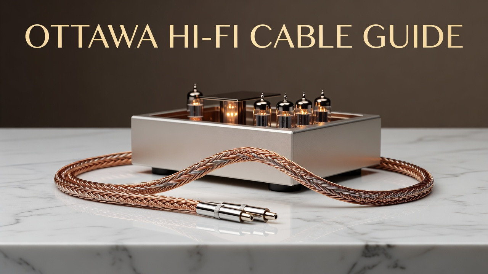
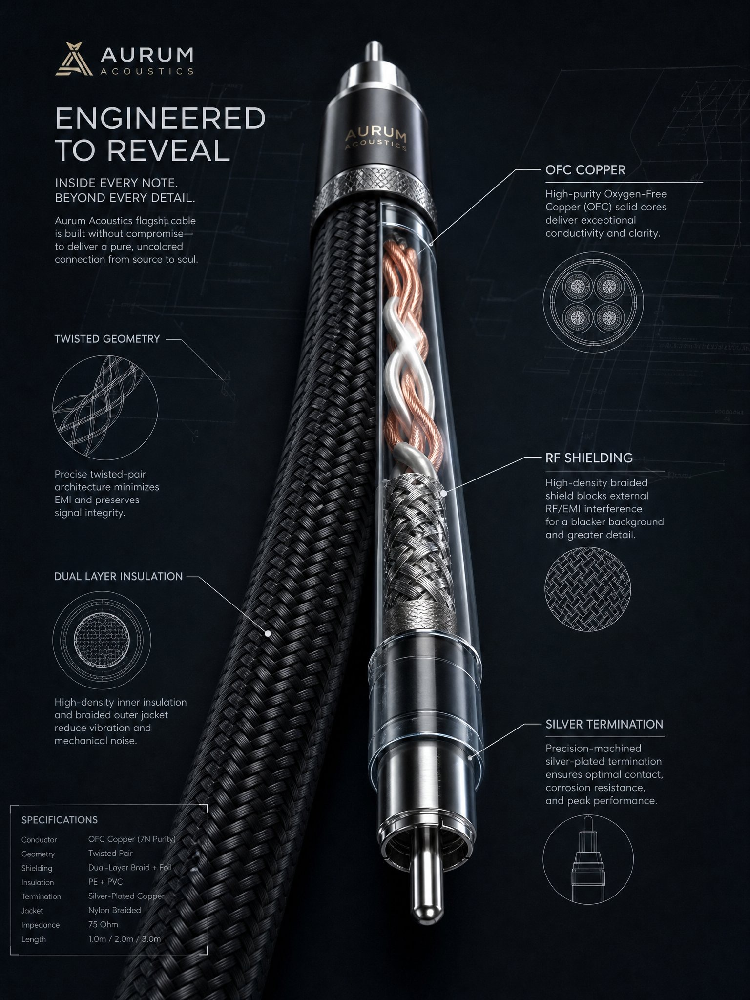
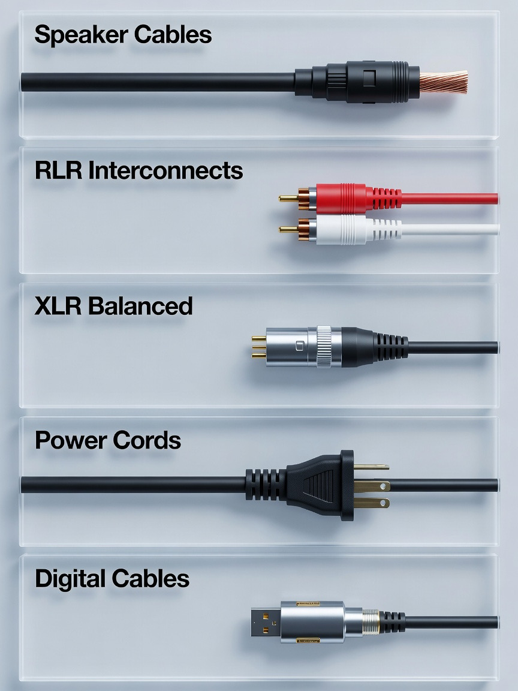
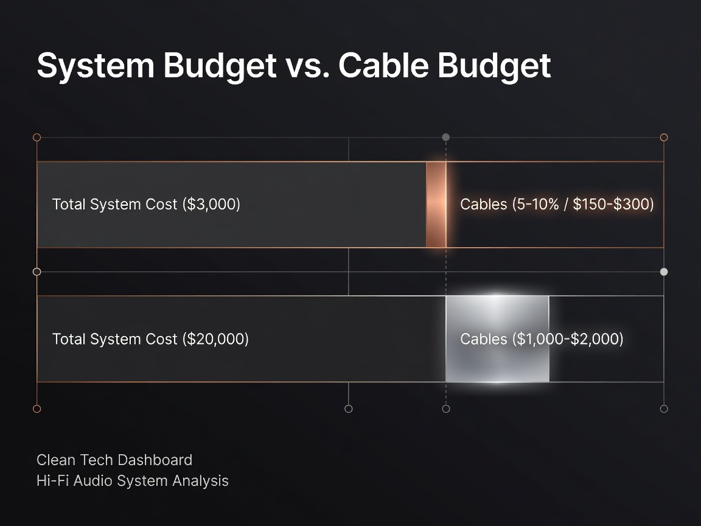
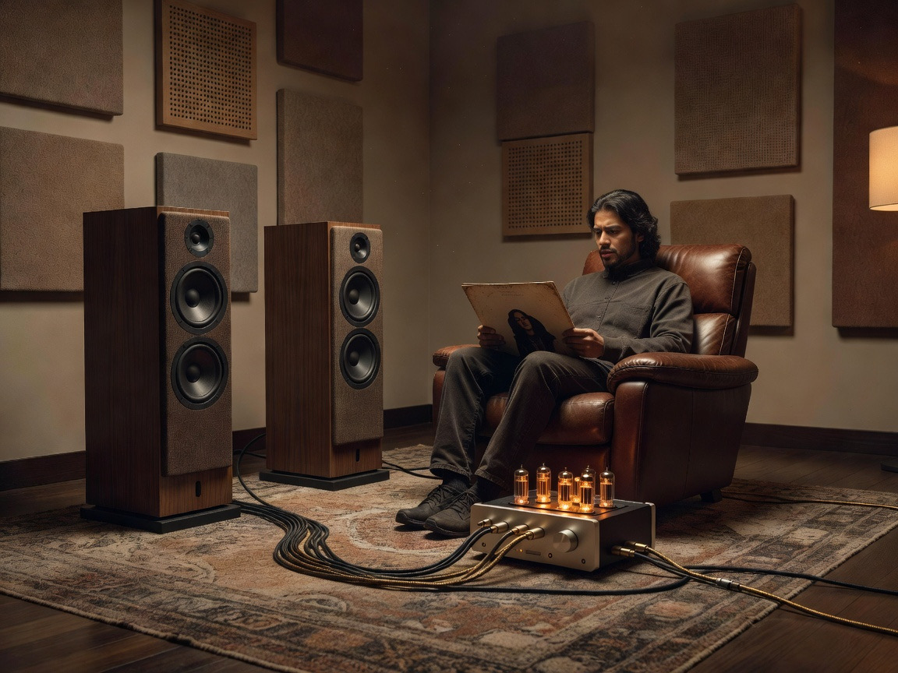

High-End Audiophile Cables in Ottawa: Selection and Demos

Walk into any serious listening room around Ottawa and you'll notice something quickly. The owner will talk about their amp, brag about their turntable, gush over the speakers. The cables? Almost always an afterthought. Yet the wires running between those components are the actual conduits of the music, and frankly, the wrong ones can choke a $10,000 system down to the performance of something half its price.
We've spent a lot of time around the Ottawa hi-fi scene, from the boutiques along Carling to the listening sessions hosted in unassuming Orleans basements, and we want to walk you through what actually matters when shopping for hi-fi cables in Ottawa, where to find them locally, and how to avoid getting fleeced by marketing copy that promises the moon.
What Makes a Hi-Fi Cable Worth the Investment?

A cable is, at its core, a conductor wrapped in insulation. Easy enough. What separates a $20 lamp-cord from a flagship audiophile run is the obsession over every variable that affects how cleanly an analog or digital signal travels between two points.
Conductor Material and Purity
Oxygen-Free Copper (OFC) is the floor, not the ceiling. Higher-tier cables step up to long-grain copper, occ (Ohno Continuous Casting) copper, or silver-plated conductors. Ottawa-based Unity Audio leans heavily on high-purity, solid-core copper in their Solid Link line, finished off with silver-content solder at the joints. Why solid-core? Stranded wire can introduce micro-distortion as the signal hops between strands. Whether your ears catch that or not is a separate debate (we'll get there).
Geometry and Shielding
Cable geometry is the unsung hero here. The way conductors are twisted, spaced, and shielded influences how much electromagnetic and radio frequency interference sneaks into your signal path. Good shielding matters more in a downtown condo packed with WiFi routers, smart bulbs, and a toddler's tablet leaking RF than it does in a rural cabin near Almonte.
Termination Quality
A perfect cable with a sloppy solder joint is just an expensive failure point. Hand-soldered terminations using high-content silver solder, locking RCA barrels, and rhodium-plated XLR pins are the kind of detail that separates boutique work from mass-produced spools.
Where to Buy Hi-Fi Cables in Ottawa
Specialty Audio Boutiques
Ottawa punches above its weight for a city its size. Distinctive Audio on Carling Avenue has been the go-to for high-end gear and custom terminations for decades, particularly if you're working with brands like Nordost or Cardas and need a non-standard length or unusual connector configuration.
Local Manufacturers
Here's where Ottawa gets interesting. We have actual cable builders working out of the area, not just resellers. Unity Audio is the obvious name, and their work has been picked up by Riverwood Acoustics as the recommended pairing for their single-driver speakers. A portion of Unity Audio sales also goes to cancer research, which is a nice touch in a hobby that can sometimes feel a bit indulgent.
In-Store Listening Rooms
You can read every review on Stereophile and The Absolute Sound, but cables interact with systems in ways that are stubbornly hard to predict on paper. A proper listening room appointment lets you swap a Silver Serpent Air against a Viablue or a Better Cables interconnect on your own amp, ideally with your own music. Most Ottawa shops will set this up by appointment if you ask politely.
Which Cable Types Match Your System?

Before throwing money at the problem, sort out what you actually need. Most systems use a mix of:
- Speaker cables running from amp to speaker, usually 10 or 12 gauge for runs over eight feet.
- RCA interconnects between source components and a preamp, where shielding and capacitance matter a lot.
- XLR (balanced) interconnects for longer runs and pro-level gear, with better noise rejection than RCA.
- Power cords feeding the amp and source, where the debate gets loudest.
- Digital cables (coax, AES/EBU, USB) for streamers and DACs, where timing precision matters.
Speaker Cables
For most Ottawa setups in townhomes or condos, a quality 12-gauge run is the sweet spot. Unity Audio's Solid Link V2 speaker cables, the Better Cables Silver Serpent line, and Viablue's offerings all sit at honest performance price points that don't require a second mortgage.
RCA and XLR Interconnects
If your preamp benefits from balanced connections, run XLR. The Blue Truth Ultra AES/EBU XLR cable is a popular reference in the region. For RCA, the Better Cables Silver Serpent Air audiophile RCA cables show up constantly in Ottawa listening rooms, particularly between DACs and integrated amps.
Power Cords and Conditioners
Power is the part where skeptics roll their eyes and enthusiasts swear they hear a quieter background. We sit somewhere in the middle. A solid power cord with proper shielding can audibly lower noise in a system pulling from a noisy electrical panel, which describes a lot of older Glebe and Westboro homes.
How Do Custom-Made Cables Improve Your Setup?
Tailored Lengths and Terminations
Off-the-shelf cables are sold in three-foot increments. Your actual run is rarely three feet. Coiled excess introduces inductance you don't want, and a too-short cable creates strain on connectors. Custom builds solve both at minimal additional cost.
Hand-Soldered Connections
Mass-produced cables are crimped, often by machine. A hand-soldered joint, done well, has lower resistance and won't oxidize as quickly. This is where local builders like Unity Audio earn their international reputation among audio enthusiast favourites.
System-Specific Matching
A bright-sounding system paired with silver conductors can become fatiguing. Pure copper warms things up. A skilled cable maker will ask about your speakers, amp topology (tube vs. solid-state), and listening preferences before recommending materials. That conversation alone is worth the appointment.
The Ottawa Audiophile Debate: Objectivist vs. Subjectivist
| Position | Core Argument | Typical Spend on Cables |
|---|---|---|
| Objectivist | Adequately thick OFC is electrically sufficient; premium cables = snake oil | $20–$100 total |
| Subjectivist | Geometry, dielectrics, and purity reveal soundstage and treble nuance | $500–$5,000+ |
| Pragmatist (us) | Spend until improvements stop being obvious to your ears, then stop | Varies by system |
The Science-Backed Skeptics
The objectivist camp, well-represented in Reddit's r/audiophile threads and several YouTube measurement channels, argues that once a cable meets baseline electrical specs, additional spend produces no measurable difference. They're not wrong about the measurements.
The Listening-First Believers
The subjectivist camp argues that measurements don't capture everything our ears process. Owners of B&W 800 series or Magnepan panels often report distinct shifts in imaging when they swap reference cables. Anecdotal? Sure. Universal? Not at all. Real to the listener? Apparently yes.
Our Middle-Ground Take
Diminishing returns kick in faster than the industry would like to admit. A $300 cable on a $1,500 system is probably misallocated capital. The same cable on a $15,000 reference rig might be the missing link. Match cable spend to system resolution.
How to Choose the Right Cable for Your Budget

Roughly speaking, budgeting around 5 to 10 percent of total system cost on cables is a reasonable starting heuristic. Less than that and you may be bottlenecking; more than that and you're probably chasing ghosts. For a $3,000 CAD setup, that puts you in the entry-level Unity Audio or Viablue range. For a $20,000 system, flagship interconnects and power cables become defensible.
Don't forget the used market. Canuck Audio Mart is a goldmine for Ottawa locals sourcing high-end cables at a fraction of new pricing, often from sellers offloading gear during system upgrades.
Why Book a Listening Demo Before You Buy

A demo does two things a spec sheet can't. First, it confirms whether you actually hear a difference, which is the only metric that matters when you're the one paying. Second, it gives you a chance to ask the dealer questions that the internet won't answer honestly because the internet has opinions, not your room.
Most Ottawa boutiques will let you bring your own source material. Bring music you know intimately, not the audiophile demo discs they hand you. A familiar Joni Mitchell vocal or a complex jazz piano recording will tell you more in three minutes than an hour of unfamiliar material.
Follow-Up Questions Ottawa Buyers Ask
- Will a postal strike delay my order? Local pickup or courier dispatch from Ottawa-based sellers usually avoids the problem.
- Are these cables an authorized dealer purchase? Always ask. Grey-market cables can void warranty coverage.
- Can I trade up later? Many Ottawa shops offer trade-in credit if you upgrade within a year or two.
FAQ
Do expensive cables really sound better? expand_more
Sometimes, on resolving systems, to attentive ears. Not universally.
What gauge speaker cable do I need? expand_more
12 AWG for runs under 20 feet covers most home setups; 10 AWG for longer pulls.
Are Canadian-made cables competitive with international brands? expand_more
Yes. Unity Audio and a handful of other Canadian companies hold their own against globally known names at comparable or better price points.
Should I bother with a power conditioner? expand_more
If your system reveals background hash on quiet passages, yes. Otherwise, optional.
Conclusion
Cables won't fix a bad system. They will, however, either preserve or quietly degrade what a good system is capable of. Ottawa happens to be one of the better Canadian cities for actually hearing the difference yourself before committing, between the local manufacturers, the boutique dealers, and the active community on Canuck Audio Mart. Book a demo, bring your own music, and trust your own ears over anyone's review, ours included.